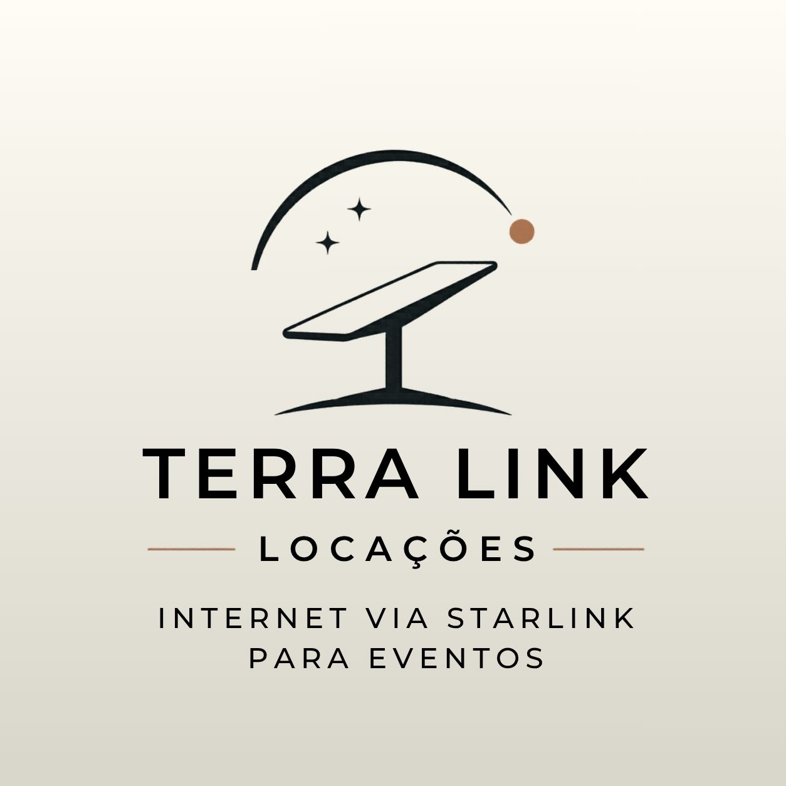

A Terra Link Locações fornece internet de alta velocidade e baixa latência via Starlink para feiras, festas e exposições. Não deixe seu evento offline.
Consultar Disponibilidade de DataGaranta que expositores tenham internet estável para credenciamento, sistemas de vendas e maquininhas de cartão sem interrupções.
Eventos no campo, chácaras ou locais remotos? Ofereça Wi-Fi de alta qualidade para que seus convidados compartilhem cada momento.
Infraestrutura tecnológica rápida de montar. Sinal limpo e potente mesmo em áreas sem cobertura de fibra óptica convencional.
Jornada de implementação rápida em 3 etapas
Verificamos o local e as coordenadas para garantir 100% de visibilidade com o satélite.
Instalação e configuração dos equipamentos deixando a internet pronta para uso.
Nossa equipe garante latência baixa durante toda a duração do evento.